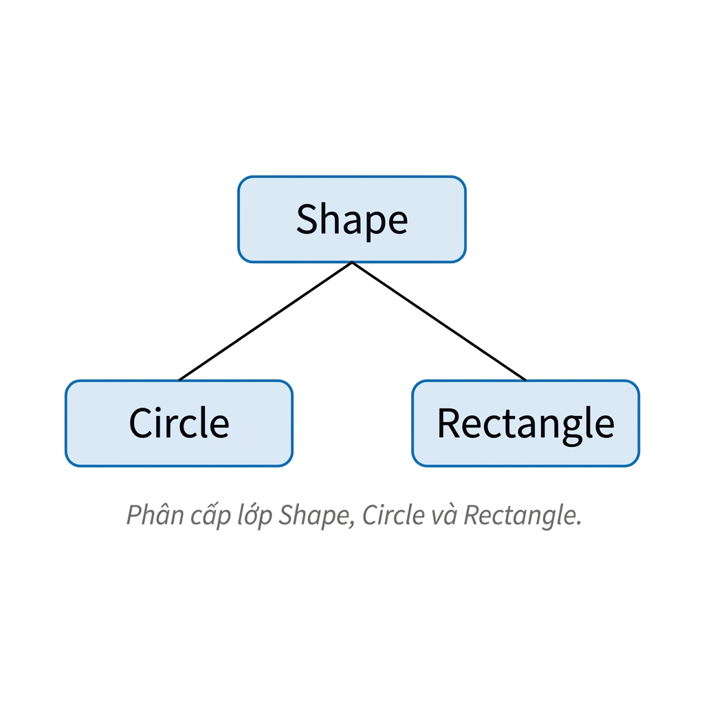
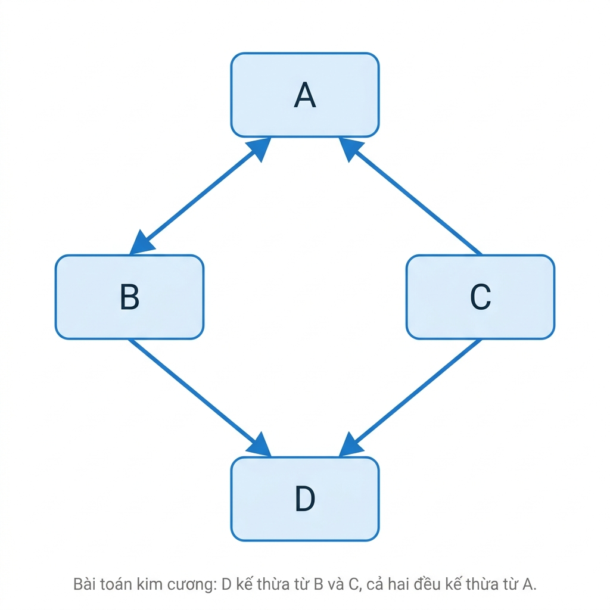
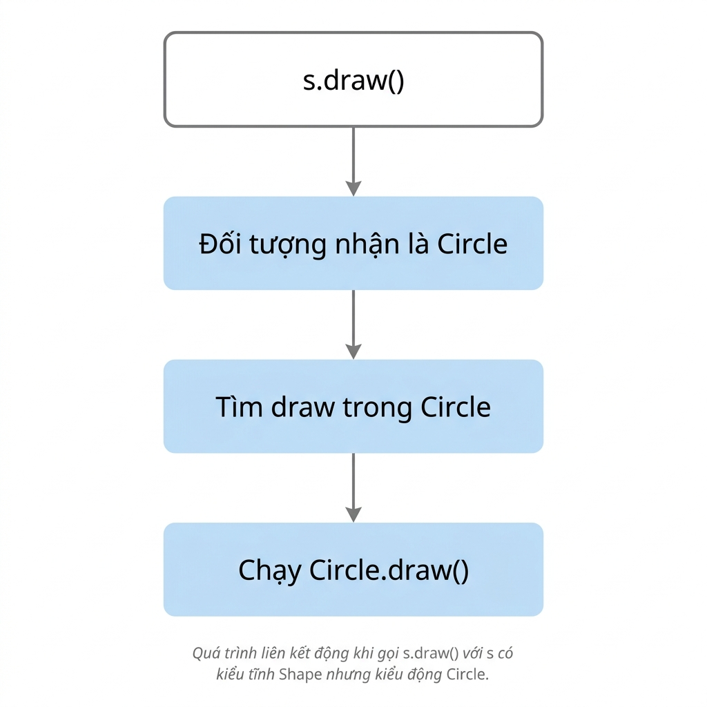
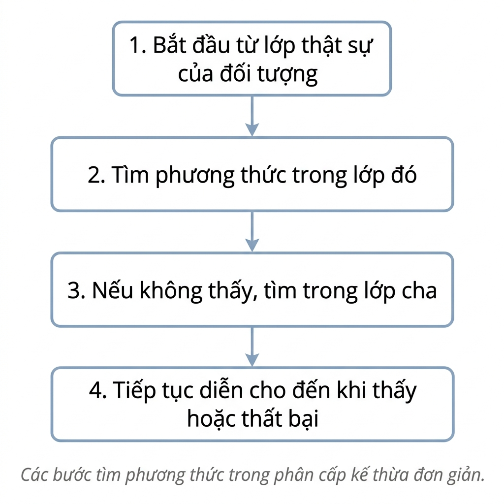

Mở đầu
Lập trình hướng đối tượng là một trong những mô hình lập trình có ảnh hưởng lớn nhất trong lịch sử phát triển ngôn ngữ lập trình. Nhiều ngôn ngữ hiện đại như Java, C++, C#, Python, Ruby, JavaScript và Scala đều hỗ trợ lập trình hướng đối tượng ở những mức độ khác nhau. Tuy nhiên, để hiểu đúng lập trình hướng đối tượng, không nên chỉ nhìn vào cú pháp class, object hoặc method. Điều quan trọng hơn là hiểu các cơ chế ngôn ngữ đứng phía sau: đối tượng (object), lớp (class), đóng gói (encapsulation), che giấu thông tin (information hiding), kế thừa (inheritance), kiểu con (subtyping), đa hình (polymorphism), liên kết động (dynamic binding) và tìm phương thức (method lookup).
Trong chương này, lập trình hướng đối tượng được tiếp cận như một mô hình tổ chức chương trình. Một chương trình không chỉ là một chuỗi thủ tục xử lý dữ liệu, mà là một tập các đối tượng có trạng thái riêng, có hành vi riêng và tương tác với nhau thông qua lời gọi phương thức.
Mô hình lập trình hướng đối tượng
Lập trình hướng đối tượng là gì?
Lập trình hướng đối tượng (Object-Oriented Programming, OOP) là mô hình lập trình trong đó chương trình được tổ chức như một tập hợp các đối tượng (objects) tương tác với nhau. Mỗi đối tượng kết hợp dữ liệu và thao tác xử lý dữ liệu đó trong cùng một đơn vị chương trình. Một đối tượng thường được hiểu qua ba khía cạnh chính:
| Khía cạnh | Ý nghĩa |
|---|---|
| Định danh (identity) | Mỗi đối tượng là một thực thể riêng biệt, ngay cả khi có cùng trạng thái với đối tượng khác |
| Trạng thái (state) | Dữ liệu hiện đang được lưu trong các thuộc tính hoặc trường của đối tượng |
| Hành vi (behavior) | Các thao tác mà đối tượng cung cấp thông qua phương thức |
Ví dụ, trong một hệ thống ngân hàng, một tài khoản có số dư, chủ tài khoản và trạng thái hoạt động. Đó là trạng thái của tài khoản. Tài khoản cũng có thể nạp tiền, rút tiền hoặc đóng tài khoản. Đó là hành vi của tài khoản.
account.deposit(100)Lời gọi trên không chỉ là lời gọi một hàm thông thường. Nó có nghĩa là yêu cầu đối tượng account tự thực hiện thao tác deposit với số tiền 100. Trọng tâm của chương trình chuyển từ "hàm nào xử lý dữ liệu nào" sang "đối tượng nào cung cấp hành vi nào". Ví dụ khác:
shape.draw()Ở đây, chương trình không nhất thiết cần biết shape là hình tròn, hình chữ nhật hay tam giác. Nó chỉ yêu cầu đối tượng shape tự vẽ chính nó. Đây là cách tư duy rất quan trọng của OOP: đối tượng chịu trách nhiệm cho hành vi gắn với dữ liệu của chính nó.
Chương trình như tập hợp các đối tượng tương tác
Trong OOP, một chương trình có thể được xem như một mạng lưới các đối tượng giao tiếp với nhau. Giao tiếp này thường được thực hiện bằng lời gọi phương thức (method call). Dạng tổng quát của lời gọi phương thức là:
receiver.method(arguments)Trong đó, receiver là đối tượng nhận yêu cầu, method là phương thức được gọi, và arguments là các đối số truyền vào. Ví dụ trong hệ thống bán hàng:
order.add_item(product)
customer.pay(order)
invoice.generate(order)| Đối tượng | Trách nhiệm |
|---|---|
customer | Đại diện cho khách hàng |
order | Quản lý danh sách sản phẩm được đặt |
product | Lưu thông tin sản phẩm |
invoice | Sinh hóa đơn cho đơn hàng |
payment | Xử lý thanh toán |
Trong thiết kế hướng đối tượng, mỗi đối tượng sở hữu dữ liệu của nó và chỉ cung cấp một số thao tác công khai để đối tượng khác sử dụng. Điều này giúp chương trình được chia thành các đơn vị có trách nhiệm rõ ràng hơn. Ví dụ:
class Order:
def __init__(self): self.items = []
def add_item(self, product): self.items.append(product)
def total(self): return sum(item.price for item in self.items)Đối tượng Order tự quản lý danh sách sản phẩm của nó. Mã bên ngoài không cần biết items được lưu bằng danh sách, mảng động, cơ sở dữ liệu hay cấu trúc khác. Nó chỉ cần gọi các phương thức mà Order cung cấp.
So sánh với các mô hình lập trình khác
Các mô hình lập trình khác nhau tổ chức tính toán theo những cách khác nhau.
| Mô hình | Ý tưởng tổ chức chính | Trọng tâm |
|---|---|---|
| Thủ tục | Thủ tục thao tác trên dữ liệu | Trình tự hành động |
| Hàm | Hàm và biến đổi giá trị | Biểu thức, bất biến |
| Hướng đối tượng | Đối tượng có trạng thái và hành vi | Trừu tượng hóa và tương tác |
| Logic | Sự kiện và luật suy luận | Suy diễn |
Ví dụ, cùng một thao tác sắp xếp danh sách có thể được nhìn theo nhiều cách:
Procedural: sort(list)
Object-oriented: list.sort()
Functional: sorted_list = sort(list)Trong cách viết thủ tục, hàm sort là trung tâm; danh sách là dữ liệu được truyền vào. Trong cách viết hướng đối tượng, danh sách là đối tượng và phương thức sort là hành vi của chính đối tượng đó. Trong cách viết hàm, ta thường tránh thay đổi danh sách ban đầu và tạo ra một danh sách mới đã được sắp xếp. Ví dụ trong Python:
numbers = [3, 1, 2]; numbers.sort(); print(numbers)Trong đoạn mã trên, numbers là một đối tượng danh sách, và sort là phương thức làm thay đổi trạng thái của đối tượng đó. Cách viết theo phong cách hàm hơn:
numbers = [3, 1, 2]; sorted_numbers = sorted(numbers); print(numbers, sorted_numbers)Ở đây, sorted trả về danh sách mới và không thay đổi numbers ban đầu.
Lập trình hướng đối tượng dựa trên lớp và dựa trên nguyên mẫu
Không phải mọi ngôn ngữ OOP đều dùng cùng một mô hình đối tượng. Hai hướng lớn là OOP dựa trên lớp (class-based OOP) và OOP dựa trên nguyên mẫu (prototype-based OOP).
Trong OOP dựa trên lớp, đối tượng được tạo ra từ lớp. Lớp đóng vai trò như bản mô tả cấu trúc và hành vi chung của các đối tượng.
class Circle: pass
c = Circle()Ở đây, Circle là lớp, còn c là một đối tượng được tạo ra từ lớp Circle. Các ngôn ngữ như Java, C++, Python và Scala chủ yếu dùng mô hình dựa trên lớp.
Trong OOP dựa trên nguyên mẫu, đối tượng mới có thể được tạo bằng cách sao chép hoặc mở rộng từ một đối tượng đã có. JavaScript là ví dụ tiêu biểu.
const prototypeCircle = { draw() { console.log("Draw circle"); } };
const c = Object.create(prototypeCircle);
c.draw();Ở đây, c không được tạo từ một lớp theo nghĩa truyền thống, mà được tạo dựa trên một đối tượng nguyên mẫu. Hai mô hình này khác nhau ở cách tạo và tổ chức đối tượng, nhưng cùng chia sẻ tư tưởng chung: chương trình được xây dựng từ các đối tượng có trạng thái và hành vi.
Đối tượng, lớp, đóng gói và kiểu dữ liệu trừu tượng
Lớp và đối tượng
Lớp (class) là mô tả chung về cấu trúc và hành vi của một nhóm đối tượng. Đối tượng (object) là một thực thể cụ thể được tạo ra khi chương trình chạy. Ví dụ:
class BankAccount:
def __init__(self, balance): self.balance = balance
def deposit(self, amount): self.balance += amount
def withdraw(self, amount): self.balance -= amountTừ lớp BankAccount, ta có thể tạo nhiều đối tượng khác nhau:
acc1 = BankAccount(100)
acc2 = BankAccount(100)acc1 và acc2 có cùng cấu trúc, cùng phương thức và thậm chí có cùng số dư ban đầu. Tuy nhiên, chúng là hai đối tượng khác nhau.
print(acc1 is acc2)
# Kết quả: FalseĐiều này minh họa rằng định danh của đối tượng độc lập với trạng thái. Hai đối tượng có thể có trạng thái giống nhau nhưng vẫn là hai thực thể khác nhau.
Định danh, trạng thái và hành vi
Một đối tượng có thể được phân tích qua ba thành phần: định danh, trạng thái và hành vi.
class Student:
def __init__(self, name, gpa): self.name = name; self.gpa = gpa
def is_excellent(self): return self.gpa >= 3.6Tạo hai đối tượng:
s1 = Student("An", 3.8)
s2 = Student("An", 3.8)
print(s1.name, s1.gpa) # An 3.8
print(s2.name, s2.gpa) # An 3.8
print(s1 is s2) # False| Khía cạnh | Trong ví dụ |
|---|---|
| Định danh | s1 và s2 là hai đối tượng khác nhau |
| Trạng thái | name, gpa |
| Hành vi | is_excellent() |
OOP cho phép gắn dữ liệu và hành vi liên quan vào cùng một đơn vị, giúp chương trình gần với cách ta mô hình hóa các thực thể trong bài toán.
Đóng gói
Đóng gói (encapsulation) là cơ chế kết hợp dữ liệu và các thao tác xử lý dữ liệu đó vào cùng một đơn vị chương trình, thường là đối tượng. Ví dụ, một ngăn xếp có thể được cài đặt như sau:
class Stack:
def __init__(self): self.items = []
def push(self, x): self.items.append(x)
def pop(self): return self.items.pop()
def top(self): return self.items[-1]
def empty(self): return len(self.items) == 0| Thành phần | Ví dụ |
|---|---|
| Trạng thái | items |
| Hành vi | push, pop, top, empty |
s = Stack(); s.push(10); s.push(20); print(s.pop())
# Kết quả: 20Việc tổ chức dữ liệu và thao tác liên quan trong cùng một lớp giúp chương trình dễ hiểu hơn. Thay vì có một danh sách dữ liệu rời rạc và nhiều hàm thao tác bên ngoài, ta có một đối tượng chịu trách nhiệm cho tính đúng đắn của chính nó.
Che giấu thông tin
Che giấu thông tin (information hiding) là nguyên tắc hạn chế truy cập trực tiếp vào biểu diễn bên trong của đối tượng và chỉ cho phép sử dụng thông qua giao diện được kiểm soát. Đóng gói và che giấu thông tin liên quan chặt chẽ nhưng không hoàn toàn giống nhau:
Ví dụ, người dùng ngăn xếp chỉ nên thao tác qua giao diện:
s.push(10)
x = s.pop()Mã bên ngoài không nên phụ thuộc vào việc ngăn xếp được cài bằng danh sách, mảng động hay danh sách liên kết.
| Giao diện công khai | Cài đặt ẩn bên trong |
|---|---|
push(x) | Có thể dùng mảng |
pop() | Có thể dùng danh sách liên kết |
top() | Có thể dùng danh sách động |
empty() | Có thể lưu kích thước riêng |
Stack dùng list của Python, ngày mai có thể đổi sang cấu trúc khác, miễn là các phương thức công khai giữ nguyên ý nghĩa.
Kiểu dữ liệu trừu tượng và OOP
Kiểu dữ liệu trừu tượng (Abstract Data Type, ADT) mô tả một tập giá trị và các thao tác trên tập giá trị đó mà không tiết lộ cách biểu diễn bên trong. Ví dụ, ADT ngăn xếp có thể được mô tả bằng giao diện:
create
push(x)
pop()
top()
empty()Người dùng ADT chỉ cần biết ý nghĩa của các thao tác. Họ không cần biết ngăn xếp được lưu bằng mảng hay danh sách liên kết. OOP mở rộng ý tưởng ADT bằng cách bổ sung thêm các khái niệm như đối tượng có định danh, lớp, đóng gói và liên kết động.
| ADT | OOP |
|---|---|
| Tập giá trị và thao tác | Đối tượng có định danh, trạng thái và hành vi |
| Che giấu biểu diễn | Đóng gói trạng thái với phương thức |
| Giao diện độc lập với cài đặt | Hỗ trợ kế thừa, đa hình, liên kết động |
Ví dụ, hai lớp khác nhau có thể cùng cung cấp giao diện ngăn xếp:
class ListStack:
def __init__(self): self.items = []
def push(self, x): self.items.append(x)
def pop(self): return self.items.pop()
class SimpleStack:
def __init__(self): self.data = []
def push(self, x): self.data.append(x)
def pop(self): return self.data.pop()Nếu mã khách chỉ dùng push và pop, nó không cần biết lớp bên trong tổ chức dữ liệu như thế nào.
Kế thừa, kiểu con và tái sử dụng mã
Phân cấp lớp
Phân cấp lớp (class hierarchy) tổ chức các lớp theo quan hệ lớp cha và lớp con. Lớp cha (superclass) cung cấp cấu trúc hoặc hành vi chung, còn lớp con (subclass) có thể kế thừa, mở rộng hoặc thay thế hành vi đó. Ví dụ:
class Shape:
def draw(self): print("Draw a shape")
class Circle(Shape):
def draw(self): print("Draw a circle")
class Rectangle(Shape):
def draw(self): print("Draw a rectangle")
Shape, Circle và Rectangle.Trong quan hệ này, Circle và Rectangle là các lớp con của Shape. Kế thừa cho phép diễn đạt quan hệ "là một loại của". Một hình tròn là một loại hình dạng; một hình chữ nhật cũng là một loại hình dạng. Tuy nhiên, không phải mọi quan hệ tái sử dụng mã đều nên được biểu diễn bằng kế thừa. Nếu quan hệ không phải "là một loại của", dùng kế thừa có thể làm thiết kế trở nên sai lệch.
Kế thừa như tái sử dụng mã
Kế thừa (inheritance) cho phép lớp con tái sử dụng và mở rộng cài đặt của lớp cha. Ví dụ:
class Employee:
def __init__(self, name): self.name = name
def get_info(self): return self.name
class Lecturer(Employee):
def teach(self): print(self.name, "is teaching")Lớp Lecturer không tự định nghĩa get_info, nhưng vẫn dùng được phương thức này vì nó kế thừa từ Employee.
lec = Lecturer("Nam"); print(lec.get_info()); lec.teach()
# Nam
# Nam is teachingKế thừa giúp tránh lặp mã. Những hành vi chung được viết một lần ở lớp cha và dùng lại ở các lớp con. Tuy nhiên, kế thừa cũng tạo ra sự phụ thuộc giữa lớp con và lớp cha. Nếu lớp cha thay đổi, lớp con có thể bị ảnh hưởng. Một lựa chọn khác là kết hợp (composition), tức là một đối tượng chứa hoặc sử dụng đối tượng khác thay vì kế thừa từ nó.
class Printer:
def print_doc(self, doc): print(doc)
class ReportService:
def __init__(self, printer): self.printer = printer
def export(self, report): self.printer.print_doc(report)Trong ví dụ này, ReportService không kế thừa từ Printer; nó sử dụng một Printer. Đây thường là thiết kế linh hoạt hơn nếu mục tiêu chỉ là tái sử dụng hành vi.
Ghi đè phương thức
Ghi đè phương thức (method overriding) xảy ra khi lớp con cung cấp cài đặt mới cho một phương thức đã được kế thừa từ lớp cha. Ví dụ:
class Shape:
def draw(self): print("Draw a shape")
class Circle(Shape):
def draw(self): print("Draw a circle")
Shape().draw() # Draw a shape
Circle().draw() # Draw a circleCả Shape và Circle đều có phương thức draw, nhưng hành vi khác nhau. Ghi đè cho phép lớp con chuyên biệt hóa hành vi của lớp cha. Đây là cơ chế quan trọng để đạt được đa hình kiểu con, nơi cùng một lời gọi phương thức có thể tạo ra các hành vi khác nhau tùy vào đối tượng thật sự lúc chạy.
Kiểu con và khả năng thay thế
Kiểu con (subtyping) là quan hệ trong hệ thống kiểu, trong đó giá trị thuộc một kiểu có thể được sử dụng ở nơi yêu cầu một kiểu khác. Nếu Circle là kiểu con của Shape, ta có thể dùng một đối tượng Circle ở nơi chương trình mong đợi một Shape. Ký hiệu thường dùng:
Circle <: ShapeNghĩa là Circle là kiểu con của Shape. Ví dụ:
def render(shape): shape.draw()
render(Circle())
render(Rectangle())Hàm render không cần biết cụ thể shape là Circle hay Rectangle. Nó chỉ cần đối tượng đó có hành vi draw. Khái niệm này gắn với khả năng thay thế (substitutability): một đối tượng lớp con có thể thay thế cho đối tượng lớp cha nếu việc thay thế đó không làm sai kỳ vọng của chương trình.
| Khái niệm | Câu hỏi chính | Góc nhìn |
|---|---|---|
| Kế thừa | Cài đặt nào được tái sử dụng? | Cài đặt |
| Kiểu con | Đối tượng này có thể dùng an toàn ở đâu? | Hệ thống kiểu |
| Ghi đè | Hành vi kế thừa nào được thay thế? | Hành vi |
| Kết hợp | Có thể tái sử dụng mà không kế thừa không? | Thiết kế |
Trong nhiều ngôn ngữ, kế thừa lớp thường đồng thời tạo ra quan hệ kiểu con. Tuy nhiên, về mặt nguyên lý, đây là hai câu hỏi khác nhau: một câu hỏi về tái sử dụng cài đặt, một câu hỏi về khả năng thay thế trong hệ thống kiểu.
Đa kế thừa và bài toán kim cương
Đa kế thừa (multiple inheritance) cho phép một lớp kế thừa từ nhiều lớp cha. Cơ chế này mạnh nhưng có thể gây mơ hồ. Bài toán nổi tiếng là bài toán kim cương (diamond problem).

D kế thừa từ B và C, cả hai đều kế thừa từ A.class A:
def f(self): print("A")
class B(A):
def f(self): print("B")
class C(A):
def f(self): print("C")
class D(B, C): pass
D().f() # B (do MRO)
print(D.__mro__)
# (<class 'D'>, <class 'B'>, <class 'C'>, <class 'A'>, <class 'object'>)Python giải quyết vấn đề này bằng thứ tự phân giải phương thức (Method Resolution Order, MRO). Với D(B, C), Python tìm phương thức theo một thứ tự xác định. Các ngôn ngữ khác có cách xử lý khác nhau: Java và C# không cho phép đa kế thừa lớp trực tiếp, nhưng hỗ trợ interface; một số ngôn ngữ dùng trait hoặc mixin; một số yêu cầu lập trình viên chỉ rõ phương thức nào được chọn.
Đa hình, liên kết động và tìm phương thức
Đa hình là gì?
Đa hình (polymorphism) nghĩa là cùng một cấu trúc chương trình có thể hoạt động trên các giá trị thuộc nhiều kiểu khác nhau. Có nhiều dạng đa hình:
| Dạng đa hình | Ý tưởng | Ví dụ |
|---|---|---|
| Đa hình đặc dụng (ad-hoc polymorphism) | Cùng tên, nhiều cài đặt khác nhau | Nạp chồng toán tử |
| Đa hình tham số (parametric polymorphism) | Cùng mã cho nhiều kiểu tham số | Generics |
| Đa hình kiểu con (subtype polymorphism) | Cùng giao diện, nhiều kiểu đối tượng khác nhau | shape.draw() |
Trong chương này, trọng tâm là đa hình kiểu con. Ví dụ:
class Circle:
def draw(self): print("Draw circle")
class Rectangle:
def draw(self): print("Draw rectangle")
def render(shape): shape.draw()
render(Circle()) # Draw circle
render(Rectangle()) # Draw rectangleCùng lời gọi shape.draw() nhưng hành vi khác nhau tùy đối tượng thật sự là Circle hay Rectangle.
Kiểu tĩnh và kiểu động
Trong nhiều ngôn ngữ OOP, một biến có thể được nhìn qua hai khái niệm: kiểu tĩnh (static type) và kiểu động (dynamic type). Ví dụ Java:
Shape s = new Circle();
s.draw();| Khái niệm | Giá trị |
|---|---|
Kiểu tĩnh của s | Shape |
| Kiểu động của đối tượng | Circle |
Kiểu tĩnh (static type) là kiểu được biết từ mã nguồn và được bộ kiểm tra kiểu sử dụng trước khi chương trình chạy. Bộ kiểm tra kiểu hỏi: kiểu Shape có phương thức draw không? Kiểu động (dynamic type) là lớp thật sự của đối tượng khi chương trình chạy. Runtime hỏi: đối tượng thật sự là Circle, vậy phương thức draw nào sẽ được thực thi?
Liên kết động
Liên kết động (dynamic binding) là cơ chế chọn cài đặt phương thức tại thời điểm chạy dựa trên kiểu động của đối tượng nhận lời gọi. Cơ chế này còn được gọi là liên kết muộn (late binding). Ví dụ Java:
class Shape { void draw() { System.out.println("Shape"); } }
class Circle extends Shape { void draw() { System.out.println("Circle"); } }
Shape s = new Circle();
s.draw(); // CircleMặc dù kiểu tĩnh của s là Shape, đối tượng thật sự được tạo ra là Circle. Vì vậy, liên kết động chọn Circle.draw(). Quá trình có thể mô tả ngắn gọn:

s.draw() với s có kiểu tĩnh Shape nhưng kiểu động Circle.Liên kết động là nền tảng để OOP hỗ trợ mở rộng. Ta có thể thêm lớp con mới mà không cần sửa mã gọi chung.
class Triangle:
def draw(self): print("Draw triangle")
render(Triangle()) # Draw triangleNếu render chỉ gọi shape.draw(), nó có thể làm việc với lớp mới miễn là lớp đó cung cấp phương thức phù hợp.
Tìm phương thức
Khi đánh giá lời gọi receiver.method(arguments), ngôn ngữ phải quyết định cài đặt phương thức nào được chạy. Quá trình này gọi là tìm phương thức (method lookup). Trong mô hình kế thừa đơn giản, quá trình tìm phương thức thường diễn ra như sau:

class Shape:
def draw(self): print("Shape")
class Circle(Shape): pass
Circle().draw() # Shape (không tìm thấy trong Circle, tìm tiếp trong Shape)Circle không định nghĩa draw, nên Python tìm tiếp trong Shape và chạy Shape.draw(). Nếu Circle định nghĩa lại:
class Circle(Shape):
def draw(self): print("Circle")
Circle().draw() # Circle (tìm thấy ngay trong Circle)Lần này Python tìm thấy draw ngay trong Circle, nên chạy Circle.draw().
Nạp chồng và ghi đè
Nạp chồng (overloading) và ghi đè (overriding) là hai khái niệm dễ bị nhầm vì đều liên quan đến phương thức có cùng tên.
| Khái niệm | Ý nghĩa | Thường quyết định khi nào |
|---|---|---|
| Nạp chồng | Cùng tên phương thức nhưng khác danh sách tham số | Thời điểm biên dịch |
| Ghi đè | Lớp con thay thế cài đặt phương thức kế thừa | Thời điểm chạy thông qua liên kết động |
Ví dụ nạp chồng trong Java:
void print(int x) { }
void print(String s) { }Trình biên dịch chọn phương thức phù hợp dựa trên kiểu đối số. Ví dụ ghi đè:
class Shape { void draw() { System.out.println("Shape"); } }
class Circle extends Shape { void draw() { System.out.println("Circle"); } }
Shape s = new Circle();
s.draw(); // Circle — kiểu động quyết địnhLý do: kiểu tĩnh của s là Shape, nên lời gọi draw hợp lệ. Nhưng kiểu động của đối tượng là Circle, nên liên kết động chọn Circle.draw().
Thiết kế ngôn ngữ hướng đối tượng
Kiểu tĩnh và kiểu động trong OOP
Các ngôn ngữ OOP khác nhau ở thời điểm kiểm tra sự tồn tại của phương thức. Trong ngôn ngữ kiểu tĩnh (statically typed), sự tồn tại của phương thức được kiểm tra trước khi chương trình chạy. Ví dụ Java:
Shape s = new Circle();
s.draw(); // Bộ kiểm tra kiểu xác nhận Shape có draw() trước khi chạyTrong ngôn ngữ kiểu động (dynamically typed), sự tồn tại của phương thức thường được kiểm tra khi chương trình chạy. Ví dụ Python:
s.draw() # Thành công nếu s có draw() tại thời điểm chạy| Cách kiểm tra | Ví dụ ngôn ngữ | Đặc điểm |
|---|---|---|
| Kiểu tĩnh | Java, C++, Scala | Phát hiện nhiều lỗi trước khi chạy |
| Kiểu động | Python, Ruby, JavaScript | Linh hoạt hơn, lỗi có thể xuất hiện khi chạy |
Không có lựa chọn nào tuyệt đối tốt hơn. Kiểu tĩnh giúp phát hiện lỗi sớm và hỗ trợ công cụ tốt. Kiểu động giúp viết nhanh, linh hoạt và phù hợp với nhiều tình huống thử nghiệm.
Định kiểu theo tên, theo cấu trúc và kiểu vịt
Các ngôn ngữ cũng khác nhau ở cách quyết định một đối tượng có thể được sử dụng trong một ngữ cảnh hay không.
Định kiểu theo tên (nominal typing) dựa trên tên kiểu và quan hệ khai báo. Ví dụ, trong Java, nếu Circle extends Shape, thì Circle có thể được dùng như Shape.
class Circle extends Shape { }Định kiểu theo cấu trúc (structural typing) dựa trên cấu trúc mà đối tượng cung cấp. Nếu một đối tượng có các phương thức hoặc trường cần thiết, nó được xem là phù hợp, dù không khai báo quan hệ kế thừa trực tiếp. TypeScript và Go thường được nhắc đến như các ngôn ngữ có nhiều đặc điểm định kiểu theo cấu trúc.
Kiểu vịt (duck typing) là cách tiếp cận thường gặp trong Python, Ruby và JavaScript. Ý tưởng là: nếu một đối tượng có hành vi cần dùng tại thời điểm chạy, ta có thể sử dụng nó.
class Circle:
def draw(self): print("Circle")
class Button:
def draw(self): print("Button")
def render(x): x.draw()
render(Circle()) # Circle
render(Button()) # ButtonCircle và Button không cần cùng kế thừa từ một lớp cha. Chúng chỉ cần cùng cung cấp phương thức draw.
Giao diện, trait và mixin
Các ngôn ngữ OOP cung cấp nhiều cơ chế để mô tả năng lực hoặc tái sử dụng hành vi mà không cần đa kế thừa lớp không kiểm soát.
| Cơ chế | Vai trò chính |
|---|---|
| Giao diện (interface) | Chỉ ra các phương thức mà một lớp phải cung cấp |
| Trait (trait) | Gói các phương thức có thể tái sử dụng, đôi khi có cả cài đặt |
| Mixin (mixin) | Bổ sung hành vi có thể kết hợp vào lớp |
Ví dụ Java với interface:
interface Drawable { void draw(); }
class Button implements Drawable { public void draw() { } }Ví dụ Python với mixin:
class JsonMixin:
def to_json(self): return self.__dict__
class Student(JsonMixin):
def __init__(self, name): self.name = name
print(Student("An").to_json())
# {'name': 'An'}Mixin cho phép bổ sung hành vi to_json mà không cần ép Student vào một phân cấp kế thừa sâu.
Lợi ích và giới hạn của OOP
OOP giúp mô hình hóa bài toán bằng đối tượng và giao diện, đóng gói dữ liệu với hành vi trong các đơn vị rõ ràng. Kế thừa, kết hợp và đa hình hỗ trợ tái sử dụng mã và mở rộng hệ thống mà ít sửa phần cũ. Với nhiều miền bài toán gồm nhiều thực thể tương tác, mô hình này thường khá tự nhiên.
Tuy nhiên, lạm dụng kế thừa hoặc xây phân cấp quá sâu dễ tạo cấu trúc cứng nhắc, khó biết hành vi thật sự nằm ở đâu. Trạng thái thay đổi và liên kết động làm chương trình khó suy luận hơn, vì luồng điều khiển ít tường minh. Không phải mọi bài toán đều phù hợp với hướng đối tượng; có lúc tư duy hàm, logic hoặc dữ liệu hiệu quả hơn.
Tóm tắt chương
Lập trình hướng đối tượng nên được hiểu qua các cơ chế ngôn ngữ — đối tượng, lớp, đóng gói, kế thừa, kiểu con, đa hình và liên kết động — chứ không chỉ qua cú pháp class. Một chương trình OOP là tập các đối tượng có định danh, trạng thái và hành vi, giao tiếp qua lời gọi phương thức.
Đóng gói gộp dữ liệu với thao tác liên quan; che giấu thông tin giữ mã bên ngoài khỏi phụ thuộc vào cài đặt bên trong. Kế thừa tái sử dụng cài đặt lớp cha; kiểu con nói về khả năng thay thế trong hệ thống kiểu — hai khái niệm liên quan nhưng không trùng nhau.
Ghi đè và đa hình kiểu con cho phép cùng lời gọi tạo ra hành vi khác nhau tùy đối tượng thực sự lúc chạy; liên kết động chọn cài đặt dựa trên kiểu động, không phải kiểu tĩnh. Các ngôn ngữ OOP khác nhau ở cách kiểm tra kiểu, định kiểu theo tên hay theo cấu trúc, và các cơ chế như interface, trait hay mixin.
OOP mạnh khi mô hình hóa các thực thể tương tác, nhưng không phải lựa chọn duy nhất; thiết kế tốt thường kết hợp hướng đối tượng với lập trình hàm và mô-đun hóa.